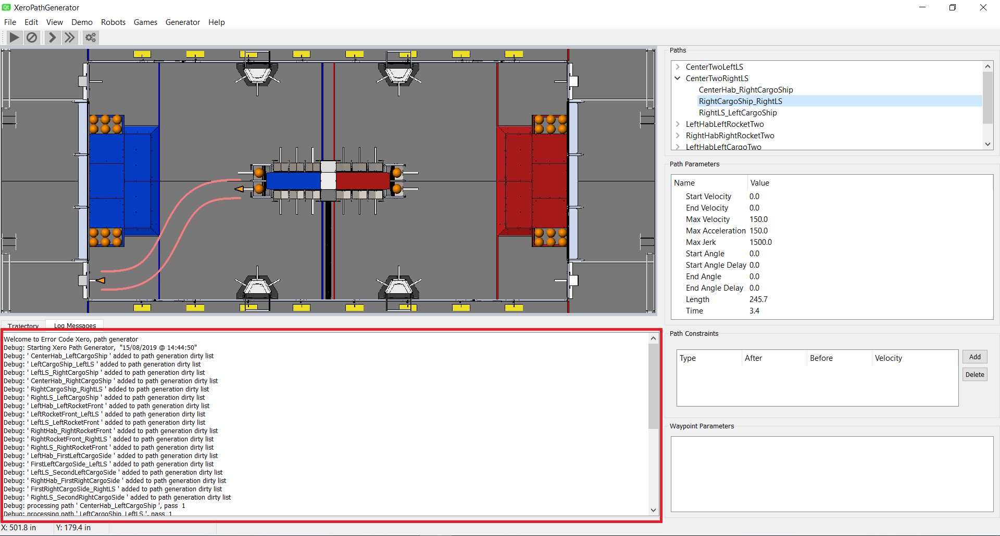

Log File Window

The Log File window is displayed below the Path Editing window when the Log File tab is selected. This window should be rarely needed but is useful when something is not working as expected.